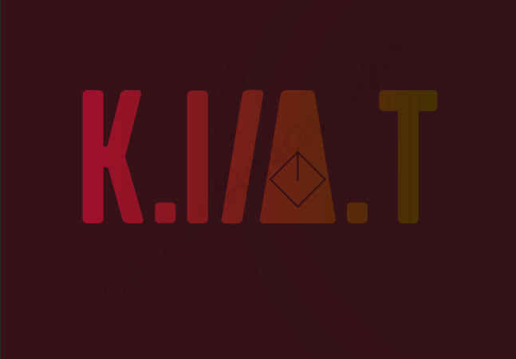
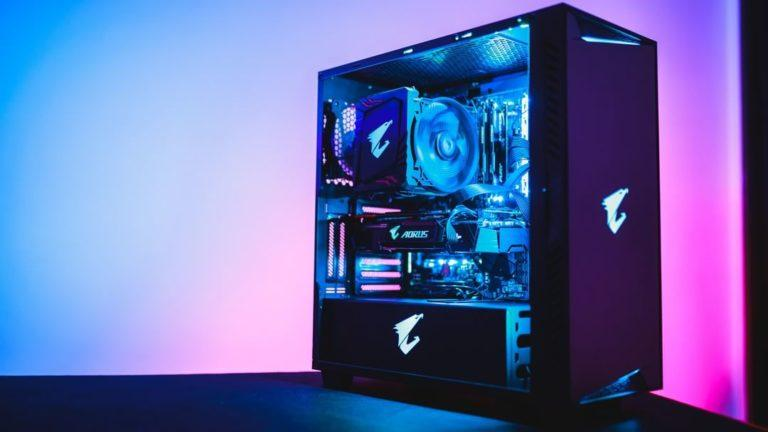

Сайтът на компютърна АКадемия е предназначе да образова малки и големи в компютърна сфера.


Компютърът е едно от най-великите изобретения, редом с колелото, електрическата крушка и телефона.
Компютърът е електронна машина, която може да разрешава различни проблеми, да обработва данни, да съхранява и извлича такива, както и да извършва изчисления по-бързо и ефективно от хората. Устройството манипулира информация или данни. Както вече знаете, може да ползвате компютъра, за да пишете документи, да пращате мейли, да играете на различни игри и да сърфирате в интернет, също както и да го ползвате, за редактиране или създаване на електронни таблици, презентации и дори видеоклипове.